Stochastic Valuation Processes
Contents
Rationale
This toolbox packages a set of stochastic processes for prices and rates simulation, aiming to create a synthetic dataset for quantitative back-testing of trading strategies and asset allocations methods.
Simulating synthetic stock prices and bond rates provides an alternative back-testing method that uses history to generate datasets with statistical characteristics estimated from the observed data. This method allows back-testing on a large sample of unseen scenarios, hence reducing the likelihood of overfitting to a particular historical data set.
Because each trading strategy needs an implementation tactic (a.k.a., trading rules) to enter, maintain, and exit the respective positions on each instrument, a simulation over thousands of different scenarios is mandatory. However, there is an implicit tradeoff.
The historical data will show the 'real' state of the financial instruments based on the realized combinations of events that affect each market. Thereby, a traditional portfolio manager will design a set of rules that optimize or hedge the profits for those specific combinations of events. Therefore, an investment strategy that relies on parameters fitted solely by one combination of events is doomed to fail.
Such a framework for designing trading strategies is limited in the amount of knowledge that can incorporate. So, simulating thousands or even millions of possibles scenarios for the future will robust the way that an econometric method exploits an inefficiency in the market.
Based on the previous postulate, I have created a toolbox that packages different stochastic processes (a.k.a, valuation methods) for back-testing synthetic data.
The processes that were for this version of the toolbox are:
Stock prices
- Brownian Motion
- Geometric Brownian motion
- Merton model
- Heston model
Bond Rates
- Vasicek model
- Cox Ingersoll Ross model
Without further due, let's briefly dive into each process and how you can use the toolbox in your Matlab session.
Introduction to the Matlab class
All the processes are methods that recreate the price path for an asset based on the user's configuration. As such, the user can initialize the class with the following command.
Please be aware that the user should enter the parameters as name-value arguments for the definition of the class.
% Creating the object that has the initialized class % This is read as follows: Generate 5 securities with 252 datapoints % each, were the time step between each observation is 1, and the start % price for the securities is $100. sim = randomProcesses("n", 5, "T", 252, "h", 1, "s0", 100);
In this case, each name-value argument is defined as follows:
- T: number of observations to generate for each time series.
- h: the size of the step.
- n: number of paths to generate.
- s0: initial price to the state for each of path to generate, be aware that if you want to simulate rates, this number is considered as a pe
- rcentage (e.g., 30 = 0.3 in the rates environment).
- sigma: trading intensity. This parameter is used for the volume generation process and is not related to the associated volatility of each instrument.
In the case the user wants a rapid check of the documentation for each process, he/she can input the following command in the Matlab console.
doc("randomProcesses")
Brownian Motion
This method implements a discrete time stochastic process for a Brownian motion that satisfies the following stochastic differential equation (SDE):
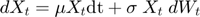
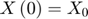
The Euler–Maruyama method is used for the numerical solution of the SDE and has the following recurrence:
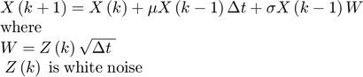
The name-value arguments for the method are:
- mu(float): Historical means of returns
- sigma(float): Historical volatility of returns
- sto_vol(logical): Optional argument for the helper that states if the volatility should be constant of stochastic in the data generation process. Default is false for this process.
Usage:
% Generate the prices paths and save the variable brownian_prices = sim.brownian_prices("mu", 0.04, "sigma", 0.15); % plot the results plot(brownian_prices) title('Assets simulated prices for Brownian Motion') ylabel('Prices') xlabel('Time step')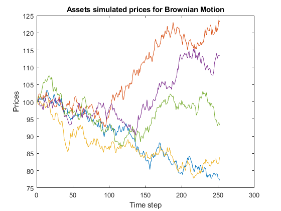
Geometric Brownian Motion
The Geometric Brownian Motion (GBM) was popularized by Fisher Black and Myron Scholes in their paper The Pricing of Options and Corporate Liabilities. In that paper, they derive the Black Scholes equation. The GBM is essentially a Brownian Motion with constant drift and a stochastic volatility component.
The stochastic differential equation (SDE) which describes the evolution of a Geometric Brownian Motion stochastic process is the following:
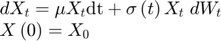
The Euler–Maruyama method is used for the numerical solution of the SDE and has the following recurrence:
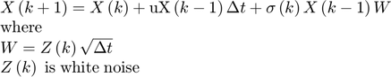
The name-value arguments for the method are:
- mu(float): Historical means of returns
- sigma(float): Historical volatility of returns
- sto_vol(logical): Optional argument for the helper that states if the volatility should be constant of stochastic in the data generation process. Default is true for this process.
% Usage: % Generate the prices paths and save the variable gbm_prices = sim.gbm_prices("mu", 0.04, "sigma", 0.15); % plot the results plot(gbm_prices) title('Assets simulated prices for Geometric Brownian Motion') ylabel('Prices') xlabel('Time step')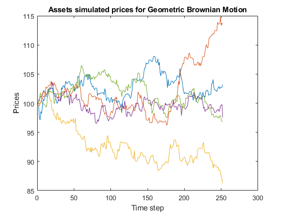
Merton’s Jump-Diffusion Model
In essence, this is a process that allows for a positive probability of a stock price change of extraordinary magnitude, no matter how small the time interval between successive observations. More formally, this is a Poisson-driven process, in which the "event" is the arrival of an essential piece of information that creates an abnormal increase/decrease in price.
The stochastic differential equation (SDE) which describes the evolution of a Merton stochastic process is the following:

The Euler–Maruyama method is used for the numerical solution of the SDE and has the following recurrence:
![$$\begin{array}{l}X\left(k+1\right)=X\left(k\right)+\mu X\left(k-1\right)\Delta
t+\sigma \left(t\right)X\left(k-1\right)W+X\left(k\right)\left(\sum_{i=0}^{N_t
} \left(Y_i -1\right)\right)\\\textrm{where}\\N_t \;\textrm{is}\;a\;\textrm{Poisson}\;\textrm{process}\;\textrm{with}\;\textrm{rate}\;\lambda
\;\textrm{and}\;Y_i \;\textrm{has}\;a\;\log \;\textrm{normal}\;\textrm{distribuition}\ldotp
\;\\\textrm{Also}\;W=Z\left(k\right)\sqrt{\Delta t}\;\\Z\left(k\right)\;\textrm{is}\;\textrm{white}\;\textrm{noise}\ldotp
\end{array}$$](documentation_eq03990231821594188460.png)
The name-value arguments for the method are:
- lambda(double): Moment of arrival of an important piece of information.
- mu(double): Historical mean of returns.
- sigma(double): Historical volatility of returns.
- sto_vol(logical): Optional argument for the helper that states if the volatility should be constant of stochastic in the data generation process. Default is true for this process.
Usage:
% Generate the prices paths and save the variable % The arrival of critical information will arrive every 30 % iterations until the end of the data points. merton_prices = sim.merton_prices("mu", 0.04, "sigma", 0.15, 'lambda', 30); % plot the results plot(merton_prices) title('Assets simulated prices for the Merton’s Jump-Diffusion model') ylabel('Prices') xlabel('Time step')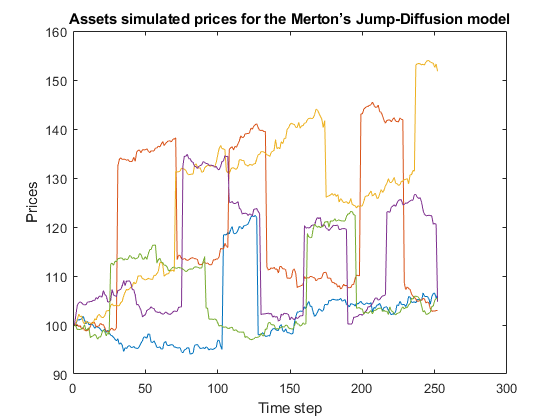
Heston Model
The original Geometric Brownian Motion stochastic process assumes that volatility over time is constant. In the early 1990s, Steven Heston relaxed this assumption and extended the Geometric Brownian Motion model to include stochastic volatility. The resulting model is called the Heston model.
In the Heston model, the volatility over time evolves according to the Cox Ingersoll Ross stochastic process. As such, the model makes use of two Wiener processes, one for the Cox Ingersoll Ross process and another for the Geometric Brownian Motion process. These two Wiener processes are correlated using Singular Value Decomposition.
The stochastic differential equations (SDE) for the Cox-Ingersoll-Ross and the Heston model are
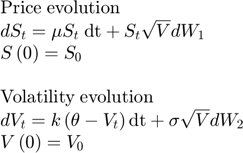
The Euler–Maruyama method is used for the numerical solution of the SDE and has the following recurrence:
![$$\begin{array}{l}\textrm{Price}\;\textrm{numerical}\;\textrm{approximation}\\S\left(i\right)=\textrm{rf}\;S\left(i-1\right)\Delta
t+\sqrt{V\left(i\right)}S\left(i-1\right)W_1 \\\textrm{where}\;W_1 =Z_1 \left(k\right)\sqrt{\Delta
t}\\Z_1 \left(k\right)\;\textrm{is}\;\textrm{the}\;\textrm{correlated}\;\textrm{white}\;\textrm{noise}\\\;\\\textrm{Volatility}\;\textrm{numerical}\;\textrm{approximation}\\V\left(j\right)=k\left(\theta
-V\left(j-1\right)\right)\Delta t+\sigma \sqrt{V\left(j-1\right)}W_2 \\\textrm{where}\;W_2
=Z_2 \left(k\right)\sqrt{\Delta t}\;\\Z_2 \left(k\right)\;\textrm{is}\;\textrm{the}\;\textrm{correlated}\;\textrm{white}\;\textrm{noise}\end{array}$$](documentation_eq01619820080346165334.png)
The name-value arguments for the method are:
- rf(double): Risk-free interest rate, theoretical rate on an asset carrying no risk. Default value is 0.02
- theta(double): Long term price variance. Default value is 1
- k(double): Rate reversion to the long term variance. Default value is 0.5
- sigma(double): Historical volatility of returns. Default value is 1
- sto_vol(logical): Optional argument for the helper that states if the volatility should be constant of stochastic in the data generation process. Default is false for this process.
Usage:
% Generate the prices paths and save the variable heston_prices = sim.heston_prices('rf', 0.01, 'theta', 0.5, ... 'k', 0.8, 'sigma', 0.2); % plot the results plot(heston_prices) title('Assets simulated prices for the Heston model') ylabel('Prices') xlabel('Time step')

Vasicek interest rate model
The Vasicek interest rate model (or merely the Vasicek model) is a mathematical method of modeling interest rate movements. The model describes the evolution of an interest rate as a factor composed of market risk, time, and equilibrium value, where the rate tends to revert towards the mean of those factors over time. Essentially, it predicts where interest rates will end up at the end of a given period, given current market volatility, the long-run mean interest rate value, and a given market risk factor.
The stochastic differential equation (SDE) for the Vasicek Interest Rate Model process is given by

The Euler–Maruyama method is used for the numerical solution of the SDE and has the following recurrence:

The name-value arguments for the method are:
- mu(double): Long term mean level. All future trajectories of s will evolve around a mean level μ in the long run. Default value is 0
- sigma(double): Instantaneous volatility, measures instant by instant the amplitude of randomness entering the system. Higher σ implies more randomness. Default value is 1
- lambda(double): Speed of reversion. λ characterizes the velocity at which such trajectories will regroup around μ in time. Default value is 0.5
- sto_vol(logical): Optional argument for the helper that states if the volatility should be constant of stochastic in the data generation process. Default is false for this process.
Usage:
% Create the object for the rate series % The following object can be read as follows: Create 5 instruments with % 252 observations each, were the time step between the observations is 1 % and the initial rate is 0.02 (i.e., 2%) sim2 = randomProcesses('n', 5, 'T', 252, 'h', 1, 's0', 2); % Generate the prices paths and save the variable vas_rates = sim2.vas_rates("mu", 0.018, "sigma", 0.03, 'lambda', 0.9); % plot the results plot(vas_rates) title('Rates simulated for the Vasicek interest rate model') ylabel('Rates') xlabel('Time step')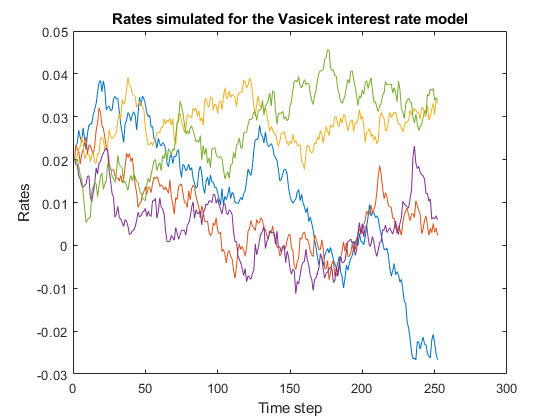
Cox-Ingersoll-Ross interest rate model
The Cox-Ingersoll-Ross model (CIR) is a mathematical formula used to model interest rate movements and is driven by a sole source of market risk. It is used as a method to forecast interest rates. The stochastic process is often used in the valuation of interest rate derivatives and has been used in the Heston model to describe the evolution of volatility over time. One interesting characteristic of the CIR stochastic process is that it is mean reverting.
The main distinction with the Vasicek model is that the Cox-Ingersoll Ross model does not allow for negative interest rates.
The stochastic differential equation (SDE) for the Cox-Ingersoll-Ross Interest Rate Model process is given by
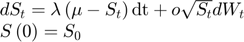
The Euler–Maruyama method is used for the numerical solution of the SDE and has the following recurrence:
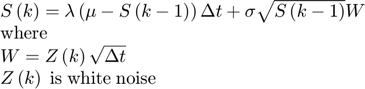
The name-value arguments for the method are:
- mu(double): Long term mean level. All future trajectories of s will evolve around a mean level μ in the long run. Default value is 0
- sigma(double): Instantaneous volatility, measures instant by instant the amplitude of randomness entering the system. Higher σ implies more randomness. Default value is 1
- lambda(double): Speed of reversion. λ characterizes the velocity at which such trajectories will regroup around μ in time. Default value is 0.5
- sto_vol(logical): Optional argument for the helper that states if the volatility should be constant of stochastic in the data generation process. Default is false for this process.
Usage:
% Generate the prices paths and save the variable cir_rates = sim2.cir_rates("mu", 0.018, "sigma", 0.03, 'lambda', 0.9); % plot the results plot(cir_rates) title('Rates simulated for the Cox-Ingersoll-Ross interest rate model') ylabel('Rates') xlabel('Time step')

Utilities
Along with the stochastic models for stock prices and interest rates, several utility methods were implemented. Such as Information driven bars (see Advances in Financial Machine Learning by Marcos López de Prado), volume generation, or order flow for each stock (see Asymmetric Information and the Distribution of Trading Volume, Matthijs Lof).
Order Flow Volume generation process based on the number of informed traders and the number of liquidity seekers for the market of a security. To check the details of the generation process please see:
- Lof, Matthijs and van Bommel, Jos, Asymmetric Information and the Distribution of Trading Volume (May 29, 2019). Available at SSRN: <https://ssrn.com/abstract=2726187> or <http://dx.doi.org/10.2139/ssrn.2726187>
Usage in Matlab:
The name-value arguments for the method are:
- eta(double): Proportion of informed trade. Default value is 0.1
- M(double): Proportion of liquidity seekers. Default value is 0.3
- market_prices(matrix): tick prices for an financial instrument.
Usage:
volumes = sim.order_flow("eta", 0.15, "market_prices", heston_prices(:, 1)); bar(volumes,'EdgeColor','none'); ylabel({'Volume'}); xlabel({'Time Step'}); title({'Generated Volumes for a Heston model'}); % Information Driven Bars % The following descriptions came from the book <https://www.bookdepository.com/Advances-Financial-Machine-Learning-Marcos-Lopez-de-Prado/9781119482086?ref=grid-view&qid=1590373792725&sr=1-1 % Advances in Financial Machine Learning> by Marcos López de Prado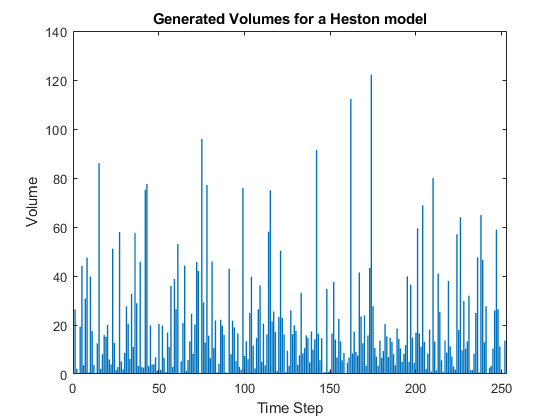
Tick Imbalance Bars
Consider a sequence of ticks 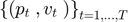 , where 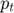 is the price associated with tick 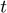 and 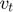 is the volume associated with tick . The so-called tick rule defines a sequence 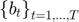 where
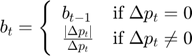
with 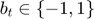, and the boundary condition 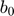 is set to match the terminal value 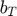 from the immediately preceding bar. The idea behind tick imbalance bars (TIB's) is to sample bars whenever tick imbalances exceed our expectations. We wish to determine the tick index, 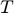, such that the accumulation of signed ticks (signed according to the tick rule) exceeds a given threshold. Next, let us discuss the procedure to determine .
First, we define the tick imbalance at time as
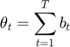
Second, we compute the expected value of 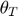 at the beginning of the bar, 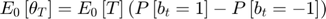, where 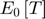 is the expected size of the tick bar, 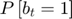 is the unconditional probability that a tick is classified as a buy, and 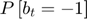 is the unconditional probability that a tick is classified as a sell. Since 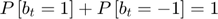, then 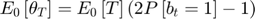
In practice, we can estimate as an exponentially weighted moving average of values from prior bars, and 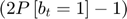 as an exponentially weighted moving average of  values from prior bars.
values from prior bars.
Third, we define a tick imbalance bar (TIB) as a 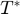 - contiguous subset of ticks such that the following condition is met:
$$T^* =\underset{T}{\textrm{argmin}} \left\lbrace \left|\theta_T \right|\ge E_0 \left\lbrack T\right\rbrack \;\left|2P\left\lbrack b_t =1\right\rbrack -1\right|\right\rbrace$$
Error updating Text.
String scalar or character vector must have valid interpreter syntax:
$$T^* =\underset{T}{\textrm{argmin}} \left\lbrace \left|\theta_T \right|\ge E_0 \left\lbrack T\right\rbrack \;\left|2P\left\lbrack b_t =1\right\rbrack -1\right|\right\rbrace$$
where the size of the expected imbalance is implied by 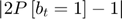. When is more imbalanced than expected, a low will satisfy these conditions. Accordingly, TIB's are produced more frequently under the presence of informed trading (asymmetric information that triggers one-side trading). In fact, we can understand TIBs as buckets of trades containing equal amounts of information (regardless of the volumes, prices, or ticks traded).
Usage in Matlab:
The name-value arguments for the method are:
- ticks(matrix): tick market prices for a security with the corresponding volumes. There is no default value for this parameter.
- window(double): number of prior observations to use for the sampling. Default value is 15.
Usage:
% all create a matrix of prices and volumes tick_prices = [heston_prices(:, 1) volumes]; % the output is an OHLCV dataset tib = sim.tib("ticks", tick_prices, "window", 20); % ploting the resutls priceandvol(tib);

Volume and Dollar Imbalance Bars
The idea behind volume imbalance bars (VIB's) and dollar imbalance bars (DIB's) is to extend the concept of tick imbalance bars (TIB's). We would like to sample bars when volume or dollar imbalances diverge from our expectations. Based on the same notions of tick rule and boundary condition as we discussed for TIB's, we will define a procedure to determine the index of the next sample, . First, we define the imbalance at time as:
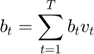
where may represent either the number of securities traded (VIB) or the dollar amount exchanged (DIB). Your choice of is what determines whether you are sampling according to the former or the latter. Second, we compute the expected value of at the beginning of the bar
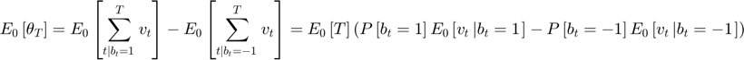
Let us denote 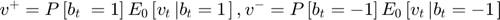, so that 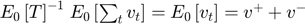. You can think of  and 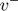 as decomposing the initial expectation of into the component contribuited by buys and the component constribuited by sells. Then
and 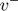 as decomposing the initial expectation of into the component contribuited by buys and the component constribuited by sells. Then
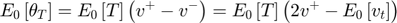
In practice, we can estimate $E_0 \left\lbrack T\right\rbrack \;$as an exponentially weighted moving average of values from prior bars, and 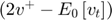 as an exponentially weighted moving average of 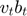 values from prior bars. Third, we define VIB or DIB as a - contiguous subset of ticks such that the following condition is met:
$$T^* =\underset{T}{\textrm{argmin}} \left\lbrace \left|\theta_T \right|\ge E_0 \left\lbrack T\right\rbrack \left|2v^+ -E_0 \left\lbrack v_t \right\rbrack \right|\right\rbrace$$
Error updating Text.
String scalar or character vector must have valid interpreter syntax:
$$T^* =\underset{T}{\textrm{argmin}} \left\lbrace \left|\theta_T \right|\ge E_0 \left\lbrack T\right\rbrack \left|2v^+ -E_0 \left\lbrack v_t \right\rbrack \right|\right\rbrace$$
where the size of the expected imbalance is implied by 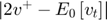. When is more imbalanced than expected, a low will satisfy these conditions. This is the information-based analogue of volume and dollar bars, and like its predecessor, it addresses the same concerns regarding tick fragmentation and outliers. Furthermore, it also addresses the issue of corporate actions, because the above procedure does not rely on a constant bar size. Instead, the bar size is adjusted dynamically.
Usage in Matlab:
The name-value arguments for the method are:
- ticks(matrix): tick market prices for a security with the corresponding volumes. There is no default value for this parameter.
- window(double): number of prior observations to use for the sampling. Default value is 15.
Usage:
% all create a matrix of prices and volumes tick_prices = [heston_prices(:, 1) volumes]; % the output is an OHLCV dataset - Dollar Imbalance Bars. If the user wants % the Volume information bars, please change the method name to vib. dib = sim.dib("ticks", tick_prices, "window", 20); % ploting the resutls priceandvol(dib);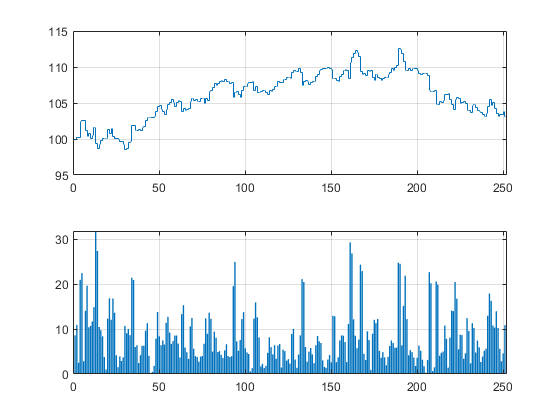
Future Work
For the next versions of the toolbox, is intended to add: Systemic risk Indicators, Volatility Estimators (for Low and High frequency data points), Statistical Tests for rejecting the Efficient Market Hypotheses, ETF builders, Asset Allocation methods, and Microstructural features.
Basically, this toolbox is intended to be the Scikit-Learn of Matlab for Quantitative finance.
Disclaimer
- This article is not intended to provide any investment recommendation by any means. It serves solely with an educational purpose.
- The views expressed in this document belong to the author and do not necessarily reflect the organization's view he is affiliated with.